Épicerie fine · rue d'Havré · Mons
El Chanade Simone
Fromages fermiers, charcuteries et viandes de ferme, vins, hydromels et liqueurs, plats préparés : plus de 500 produits du terroir, à deux pas de la Grand-Place. Et toujours un conseil derrière le comptoir.
Du mardi au samedi · 10 h 30 – 17 h 45
- 5,0 sur Google · 7 avis
- Fromages fermiers et artisanaux
- Vins, bières, hydromels
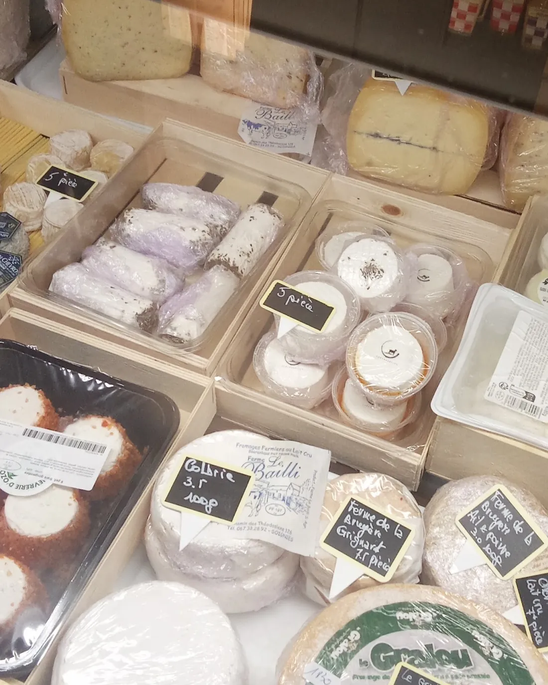
Depuis 2021Prix attractifs
El Chana de Simone
- Épicerie & viandes fermières
- Fromages fermiers & artisanaux
- Charcuteries fermières & artisanales
- Vins, bières, alcools & liqueurs
- Plats préparés
- Articles de cadeaux
- Café, thé, biscuits & chocolats
Le comptoir
Du fromage fermier au petit verre d'hydromel
Plus de 500 références sélectionnées avec soin, sur des étagères noires où les prix s'écrivent à la craie.
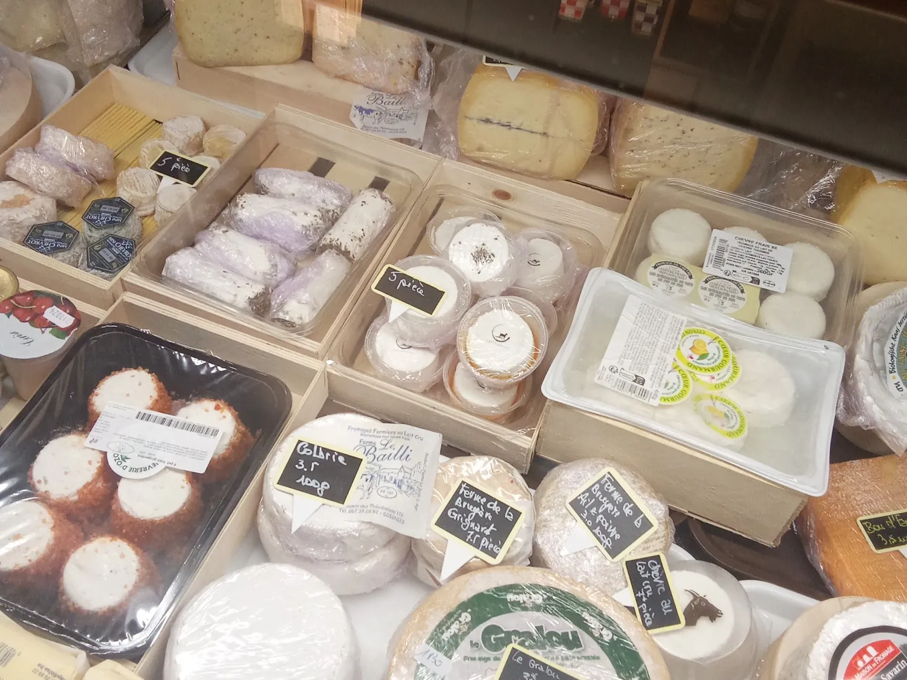
FromagesFermiers et artisanaux
Chèvres frais, bûches, croûtes fleuries et tommes, chacun avec son ardoise. « Une magnifique sélection de fromage ! », écrit une cliente.
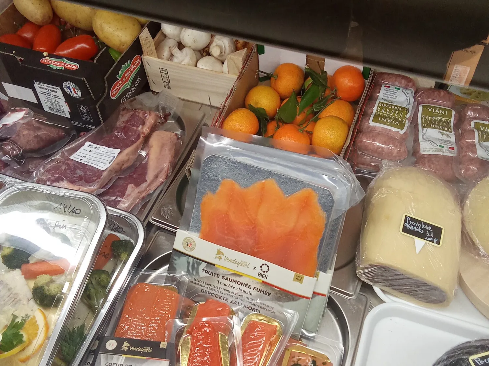
Comptoir fraisViandes et charcuteries
Viandes fermières, saumon fumé, saucisses, légumes et plats préparés.
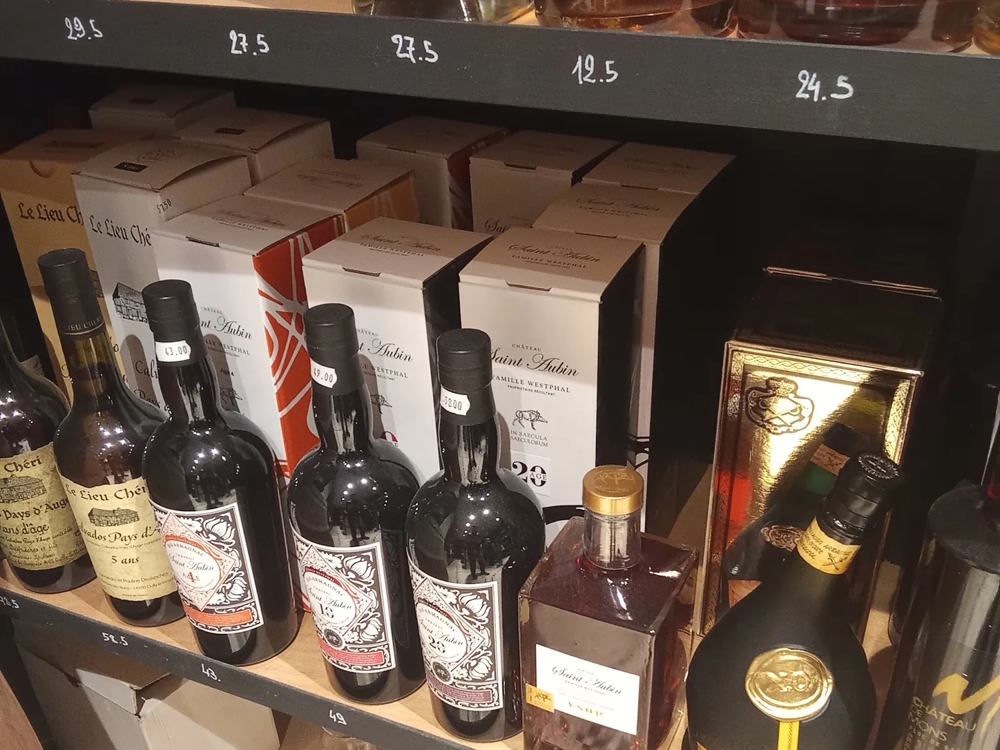
CaveDes vins qui sortent du lot
Une sélection « originale », dit une habituée, avec de belles découvertes locales.
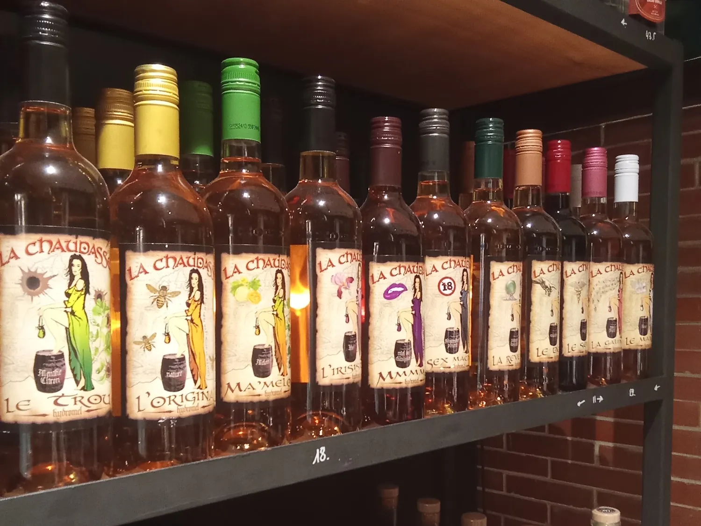
HydromelsToute une étagère
Une rangée entière d'hydromels, chacun son étiquette.
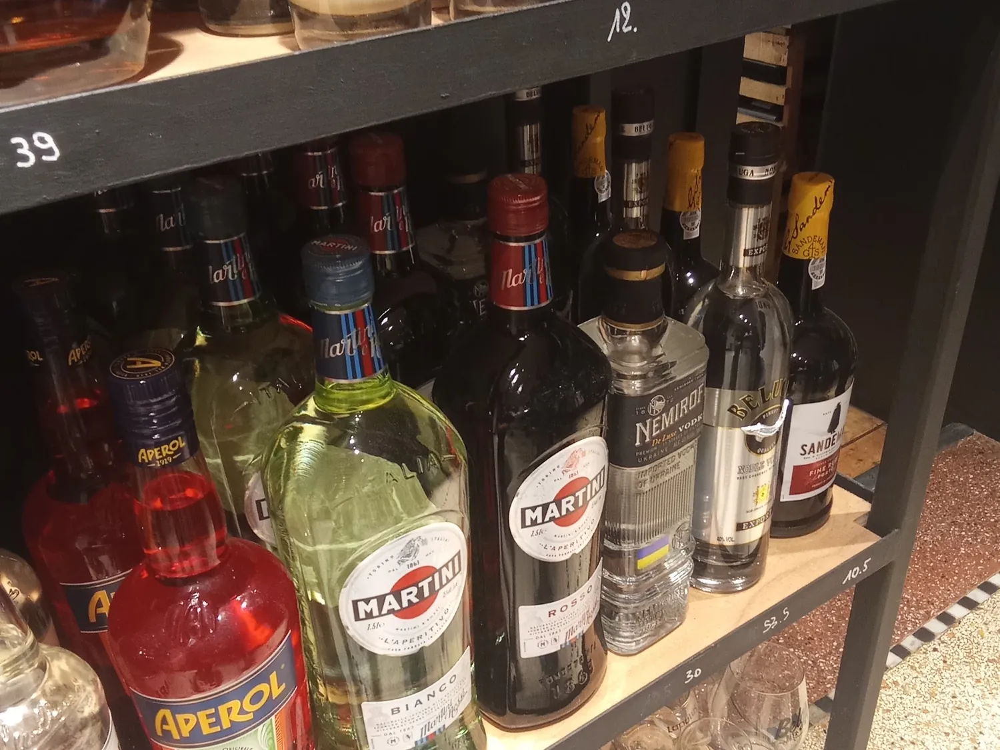
ApéritifsAlcools et liqueurs
Pour l'apéritif, demandez : une cliente vante « ses avis éclairés ».
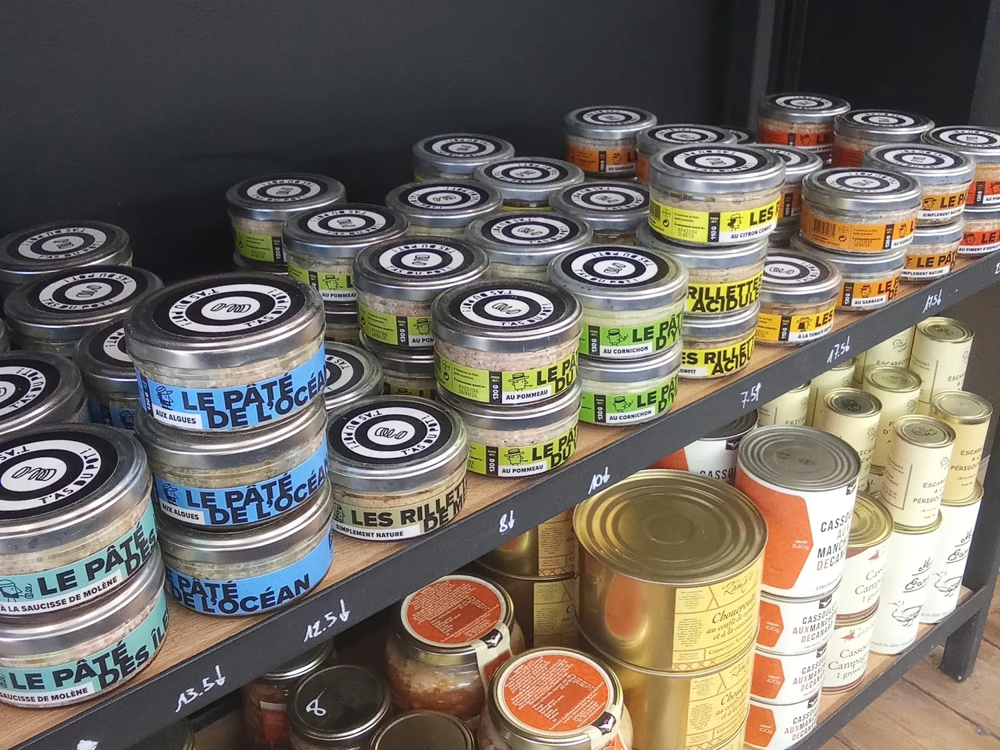
ConservesPâtés et rillettes
Conserves fines et confits, à offrir ou à garder pour soi.
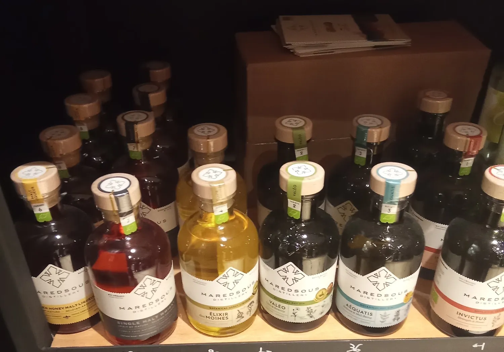
SpiritueuxÉlixirs et eaux-de-vie
Des spiritueux belges, pour finir le repas ou pour offrir.
Et aussi au comptoir…
- Bières
- Café et thé
- Biscuits et chocolats
- Plats préparés
- Articles de cadeaux
- Confits
D'après l'ardoise de la boutique et la page de La Marmite de Simone.
Glissez pour parcourir les rayons
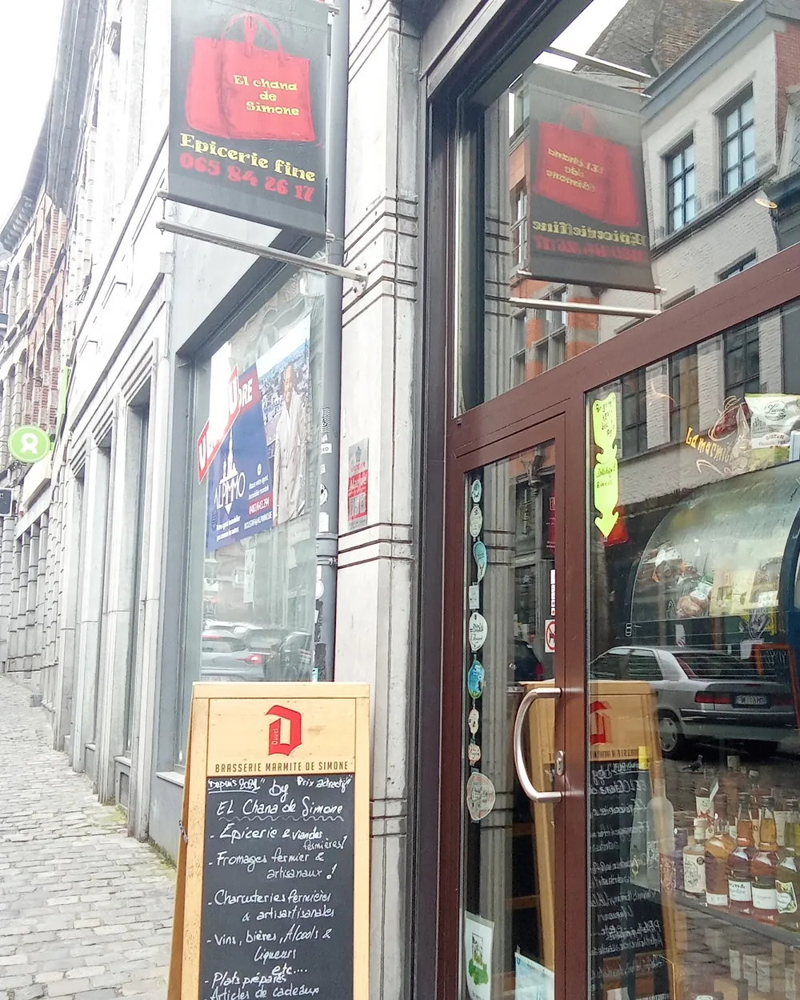
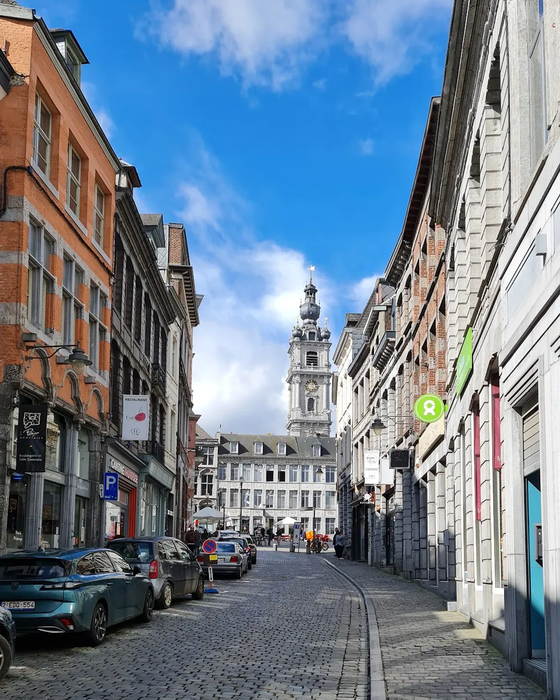
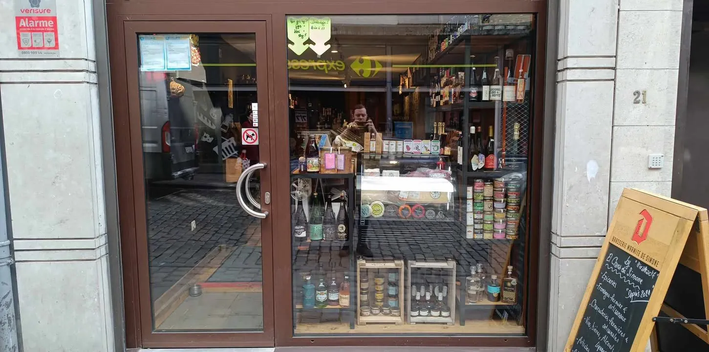
La maison
L'épicerie d'une brasserie du terroir
El Chana de Simone, c'est l'épicerie fine de La Marmite de Simone, la brasserie familiale d'Angélique et Daniel, un peu plus loin dans la même rue. Les fromages, charcuteries, bières, vins et produits frais du comptoir passent aussi en cuisine, dans les plats servis à la Marmite.
Ici, on demande, et on repart avec le bon fromage et la bonne bouteille : dans leurs avis, les clients parlent tous du conseil, jusqu'à vous dire si un produit va vous convenir.
Personnel agréable et ambiance familiale. Un bon choix de produits de qualité et régionaux par dessus tout! […]Léa L., avis Google
À retirer
Votre panier prêt, vous n'avez qu'à passer
Dites ce qu'il vous faut, pour combien et quand vous passez : le comptoir prépare, conseille si besoin, et tout vous attend.
Retrait rue d'Havré 19Du mardi au samedi, 10 h 30 – 17 h 45
Ils en parlent
« Une magnifique sélection de fromage ! »
Sept avis sur Google, tous à cinq étoiles. Voici ceux qui ont un texte, mot pour mot.
Horaires et accès
Du mardi au samedi, à deux pas de la Grand-Place
| lundi | fermé |
|---|---|
| mardi | 10 h 30 – 17 h 45 |
| mercredi | 10 h 30 – 17 h 45 |
| jeudi | 10 h 30 – 17 h 45 |
| vendredi | 10 h 30 – 17 h 45 |
| samedi | 10 h 30 – 17 h 45 |
| dimanche | fermé |
Horaires de la fiche Google, relevés le 19 novembre 2026.
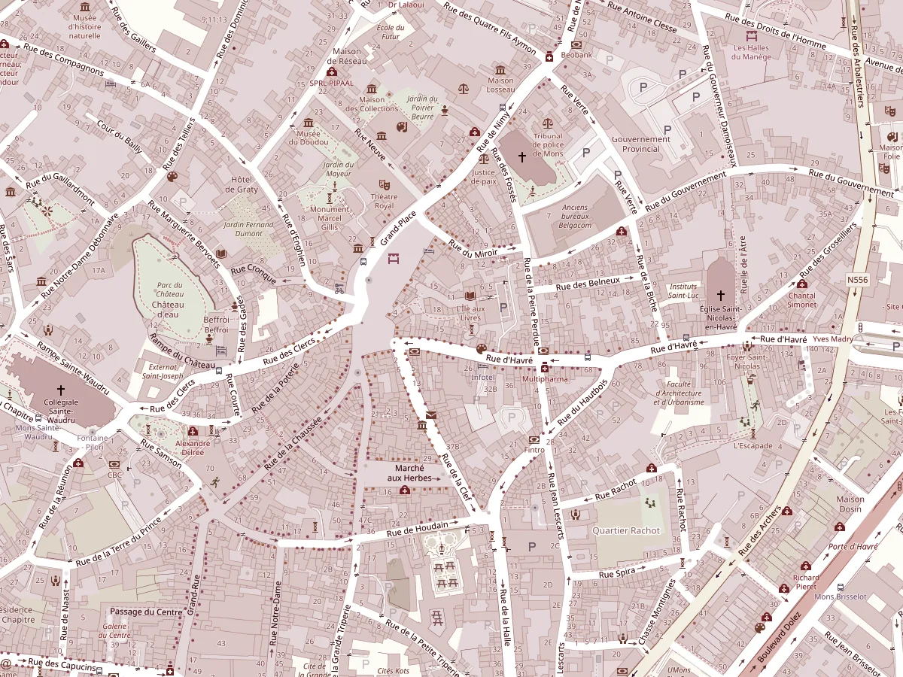
Itinéraire © OpenStreetMapÀ table, au n° 44
Les mêmes produits, cuisinés : La Marmite de Simone sert une cuisine belge faite maison, un peu plus loin dans la rue. La Marmite
Les arrivages
Nouveautés et produits du moment : l'épicerie a sa page Facebook. Suivre El Chana